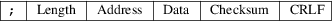

srec_mos_tech - MOS Technology file format
The MOS Technology format allows binary files to be uploaded and downloaded between between a computer system (such as a PC, Macintosh, or workstation) and an emulator or evaluation board for microcontrollers and microprocessors.
The
Lines
Each line consists of 5 fields. These are the length field,
address field, data field, and the checksum. The lines
always start with a semicolon (;) character.
The Fields

|
Length |
The record length field is a 2 character (1 byte) field that specifies the number of data bytes in the record. Typically this is 24 or less. | ||
|
Address |
This is a 2-byte address that specifies where the data in the record is to be loaded into memory, big-endian. | ||
|
Data |
The data field contains the executable code, memory-loadable data or descriptive information to be transferred. |
Checksum
The checksum is an 2-byte field that represents the least significant two bytes of the the sum of the values represented by the pairs of characters making up the record’s length, address, and data fields, big-endian.
End of
File
The final line should have a data length of zero, and the
data line count in the address field. The checksum is not
the usual checksum, it is instead a repeat of the data line
count.
Size
Multiplier
In general, binary data will expand in sized by
approximately 2.54 times when represented with this
format.
Here is an example MOS Technology format file. It contains the data “Hello, World” to be loaded at address 0.
;0C000048656C6C6F2C20576F726C640454
;0000010001
srec_cat
version 1.65
Copyright (C) 1998, 1999, 2000, 2001, 2002, 2003, 2004,
2005, 2006, 2007, 2008, 2009, 2010, 2011, 2012, 2013, 2014,
2018, 2019, 2022 Peter Miller
The srec_cat program comes with ABSOLUTELY NO WARRANTY; for details use the ’srec_cat -VERSion License’ command. This is free software and you are welcome to redistribute it under certain conditions; for details use the ’srec_cat -VERSion License’ command.
(The following information is reproduced from http://users.telenet.be/kim1-6502/6502/usrman.html#F just in case it vanishes from the Web.)
The paper tape LOAD and DUMP routines store and retrieve data in a specific format designed to insure error free recovery. Each byte of data to be stored is converted to two half bytes. The half bytes (whose possible values are 0 to F HEX) are translated into their ASCII equivalents and written out onto paper tape in this form.
Each record outputted begins with a “;” character (ASCII 3B) to mark the start of a valid record. The next byte transmitted (18HEX) or (24 decimal) is the number of data bytes contained in the record. The record’s starting address High (1 byte, 2 characters), starting address Lo (1 byte, 2 characters), and data (24 bytes, 48 characters) follow. Each record is terminated by the record’s check-sum (2 bytes, 4 characters), a carriage return (ASCII 0D), line feed (ASCII 0A), and six “NULL” characters (ASCII 00). (NULL characters cause a blank area on the paper tape.)
The last record transmitted has zero data bytes (indicated by ;00) The starting address field is replaced by a four digit Hex number representing the total number of data records contained in the transmission, followed by the records usual check-sum digits. An “XOFF” character ends the transmission.
;180000FFEEDDCCBBAA0099887766554433221122334455667788990AFC
;0000010001
During a “LOAD” all incoming data is ignored until a “;” character is received. The receipt of non ASCII data or a mismatch between a records calculated check-sum and the check-sum read from tape will cause an error condition to be recognized by KIM. The check-sum is calculated by adding all data in the record except the “;” character.
The paper tape format described is compatible with all other MOS Technology, Inc. software support programs.